Индия
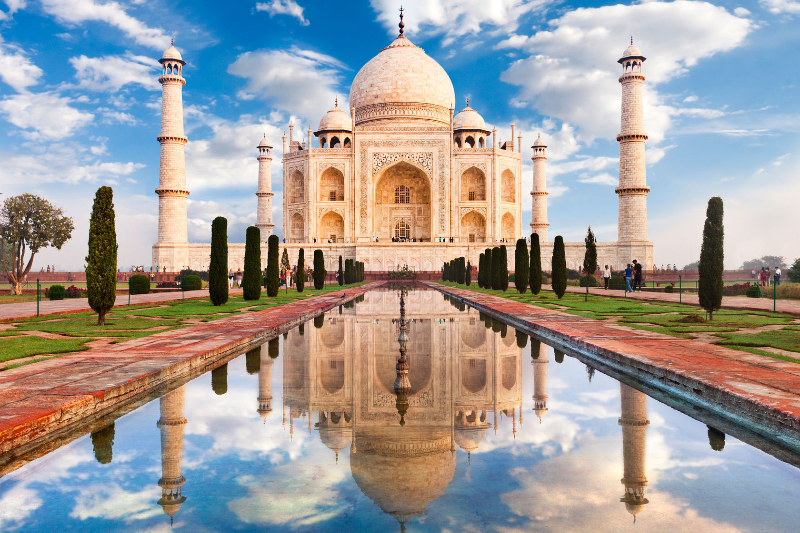
О стране
Гоа – популярный курорт Индии, где нет места обыденности, эксцентричность царит повсюду. Здесь свои законы и жизненный уклад, экзотический микрокосм, погружающий туристов в атмосферу безмятежности и полного расслабления.
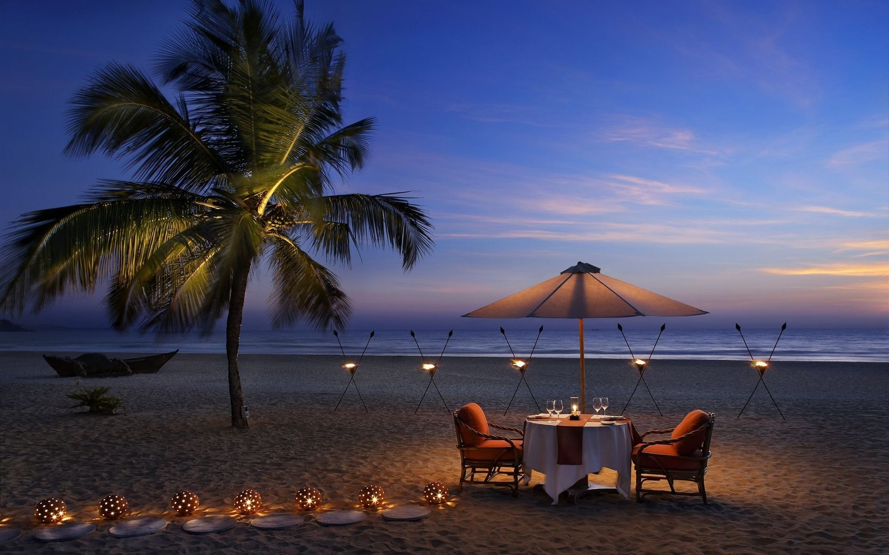
Гоа – самый маленький штат Индии, расположенный на западном побережье Аравийского моря. Общая площадь штата всего 659 км², за пару часов вы сможете проехать его целиком на автомобиле. В регионе много рек и все они судоходные, поэтому здесь развита такая туристическая услуга как водные прогулки на лодках и кораблях. В центре побережья находятся острова Святого Георгия и Большой, около которых проходят погружения дайверов и сноркелеров. На востоке протянулся горный массив Западные Гаты, покрытый густыми тропическими лесами.
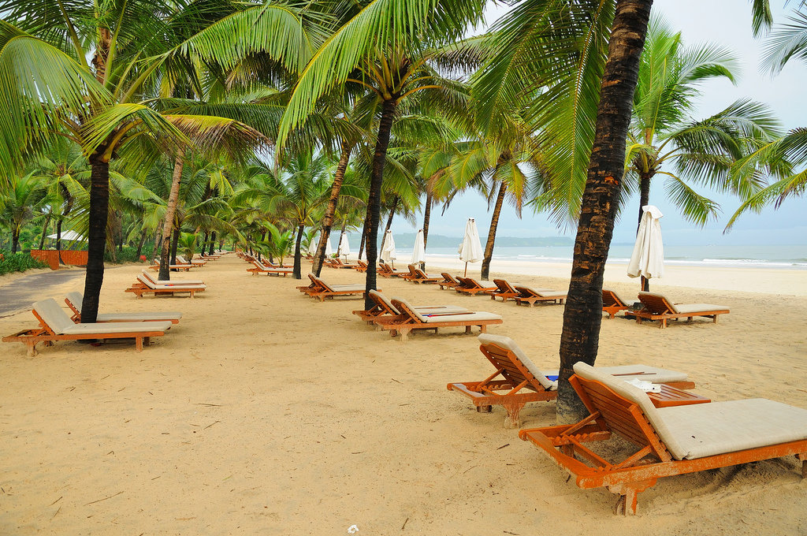
Климат
Отдыхать на Гоа можно круглый год, однако в летний период на штат обрушиваются тропические ливни. Поэтому туристический сезон на курорте начинается с октября и длится до конца марта. Средняя температура воздуха в это время колеблется в пределах от +31С° до +33С°. Протяженность береговой линии на курорте более 100 км, на большинстве пляжей вы сможете заняться водными видами спорта. Особенно распространен в этих краях дайвинг, однако и другие виды не сильно уступают ему.
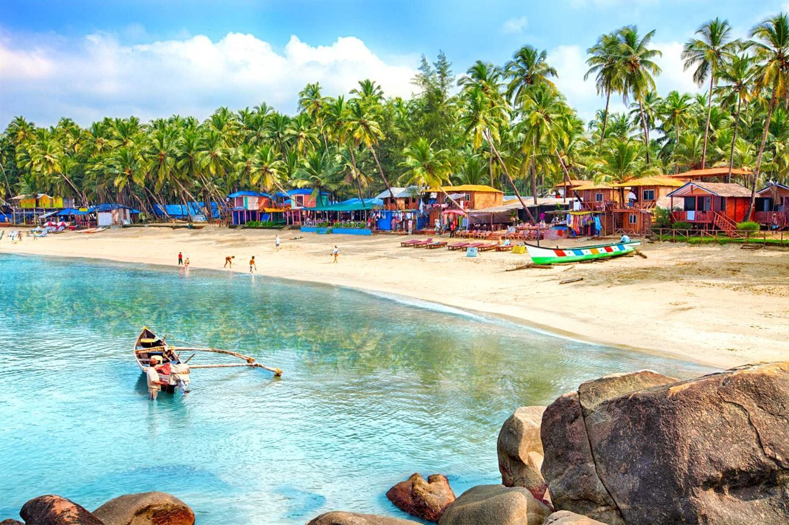
Удивительная природа предгорий Гоа поражает разнообразием: озера, водопады, острова, пальмовые рощи и мангровые заросли с огромным количеством экзотической живности, и, конечно же, уникальные плантации специй, фруктов и овощей. Гоанская музыка и танцы известны во всем мире.
Залитые солнцем пляжи, теплые воды Аравийского моря и пышная тропическая растительность Гоа создают атмосферу гармонии и умиротворенности. В исторических городах туристы могут ознакомиться со средневековыми индуистскими храмами, церквями, мечетями и монастырями. Особое впечатление оставляют еженедельные рынки, которые можно описать как роскошное пиршество красок, запахов и звуков, и, конечно же, центры аюрведы, древней медицинской системы лечения и профилактики заболеваний.
Приглашаем вас совершить удивительное путешествие в страну просветления и древних традиций.
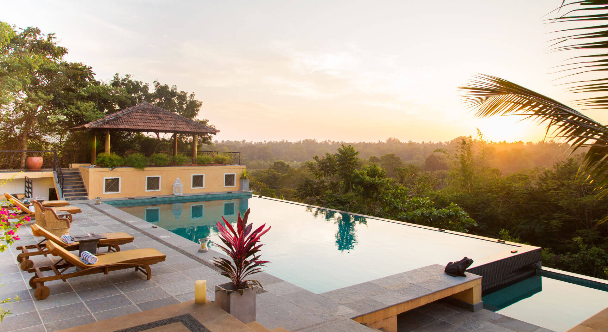
КУРОРТЫ ГОА
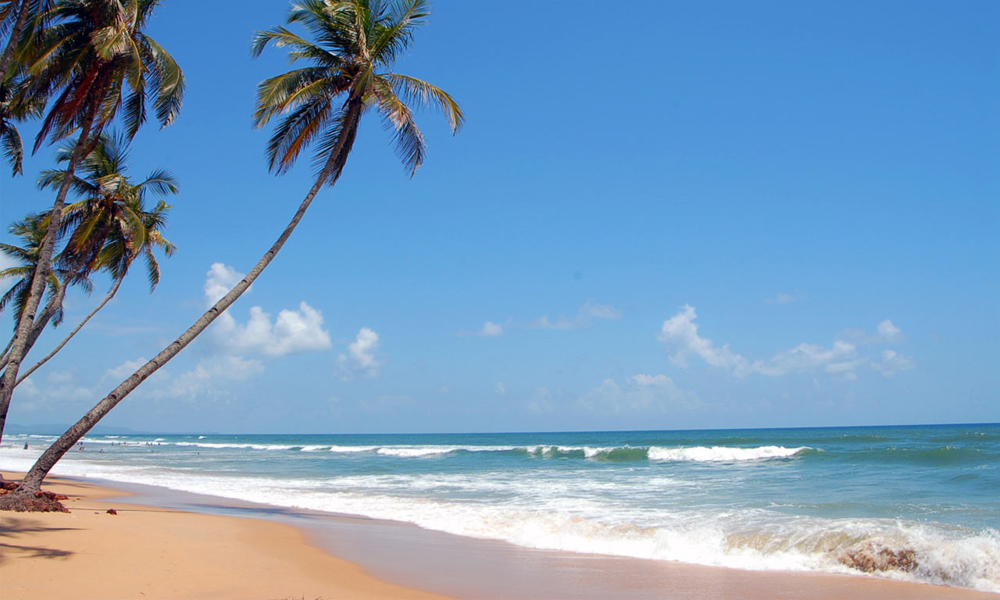
ЮЖНЫЙ ГОА
Южный Гоа расположен ниже реки Зуари и является самой незаселенной частью штата. Почти все побережье выкуплено крупными инвесторами под строительство рекреационных сооружений. Здесь сосредоточено огромное количество отелей высокой категории, привлекая состоятельных туристов со всего мира. Юг Гоа можно охарактеризовать как престижную зону для спокойного и комфортного отдыха с хорошими пляжами, качественным размещением и сервисом, разнообразной кухней и прекрасно оборудованными аюрведическими центрами. Гостинцы и отели, как островки цивилизации органично дополняют тропическую природу, создавая атмосферу безмятежности. Белые и широкие пляжи славятся мелким, сыпучим песком и абсолютной прозрачностью прибрежных вод.
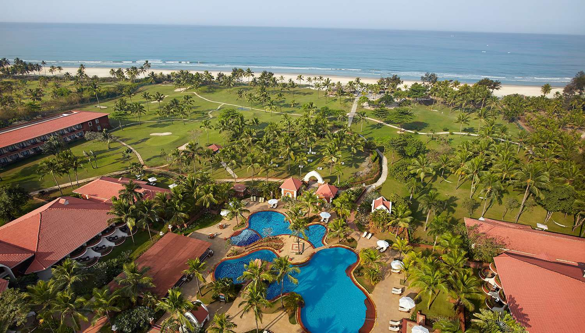
Курорт не насыщен яркими музыкальными событиями и обилием вечеринок, зато здесь больше возможностей для занятий водными видами спорта, в том числе дайвингом и рыбалкой. Совсем недалеко от побережья, под водой, покоятся живописные останки более чем пятисот затонувших судов. Португальские и английские каравеллы и галеоны граничат с эсминцами и крейсерами времен Второй мировой войны. Их исследование позволит погрузиться в атмосферу колониальных войн индустриальных империй XIX и XX столетий. Довольно разнообразны представители морской фауны, в прибрежных водах можно встретить тунца, кефаль, барракуду, омаров или лобстеров. Местные рыбаки за небольшую плату охотно согласятся организовать рыбалку и помогут в приготовлении пойманной добычи.
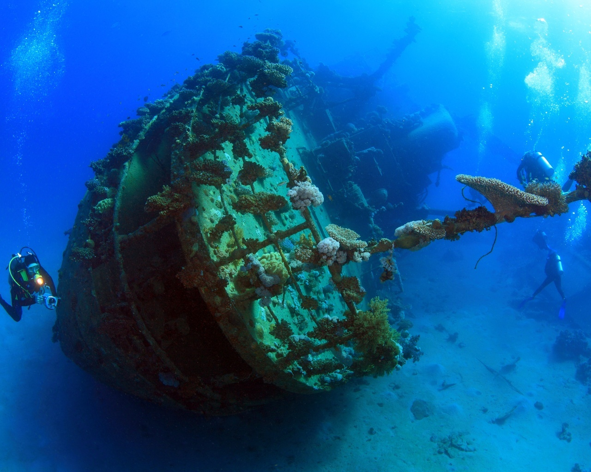
На территории округа, к которому относится Южный Гоа, находится самый большой заповедник в Индии, где с высоты наблюдательной вышки можно оценить красоту его дикой флоры и фауны. Любителям нетронутой природы стоит также посетить пляж Палолем, называемый «жемчужиной крайнего юга» или «Райским пляжем». «Дикари» со всего мира обожают это место за его необжитость и первозданность.
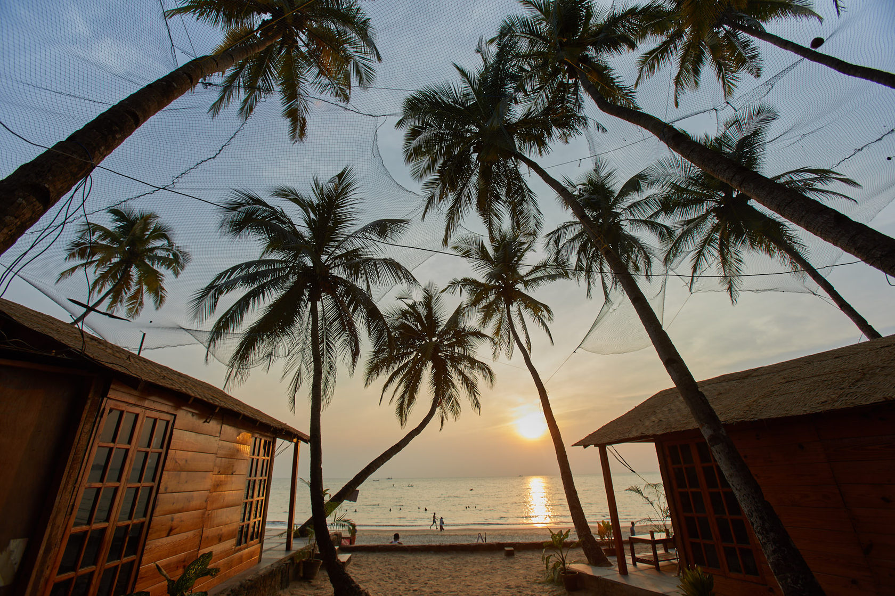
Незабываемые впечатления оставит посещение города Маргао, административного центра Южного Гоа. Известность среди туристов он приобрел, благодаря церкви Святого Духа, построенной еще в 1675 году. Величия и живописности христианскому храму придает раскинувшийся перед ним сад плодовых манговых деревьев.
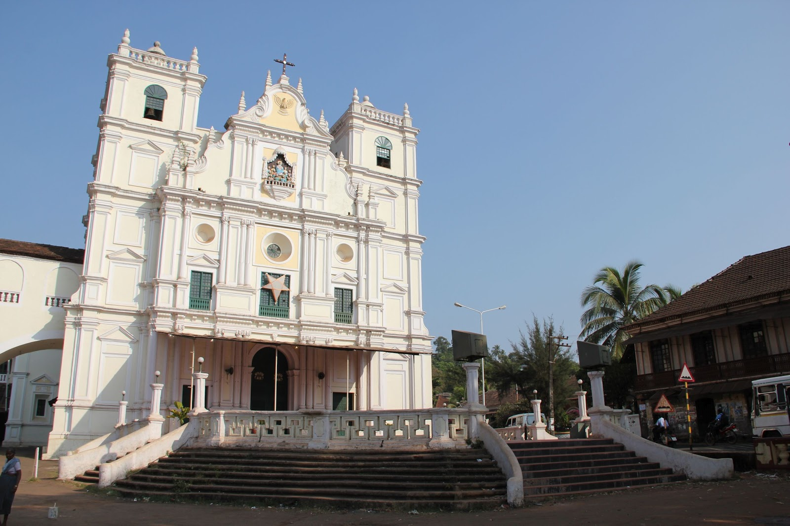
СЕВЕРНЫЙ ГОА
Северный Гоа – самый развитый с точки зрения туризма район Индии, на много километров раскинувшийся вдоль побережья Аравийского моря. С конца 60-х гг. прошлого века Северный Гоа был одним из любимейших мест неформальной молодежи из Европы и Америки. Но, несмотря на то, что эти времена уже далеко в прошлом, атмосфера праздника, веселья, пульсирующего ритма ночной жизни не угасла и по сей день.
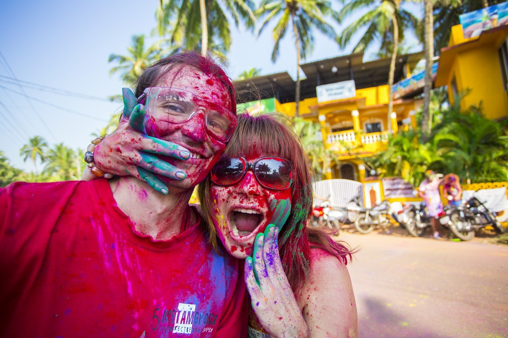
Северную часть штата характеризует колорит пляжей из темно-серого вулканического песка. Они тянутся непрерывной тридцатикилометровой полосой с юга на север от форта Агуады до границы штата Махараштра. Тихие и уединенные уголки побережья граничат с полными развлечений и огромным спектром услуг обустроенными пляжами.
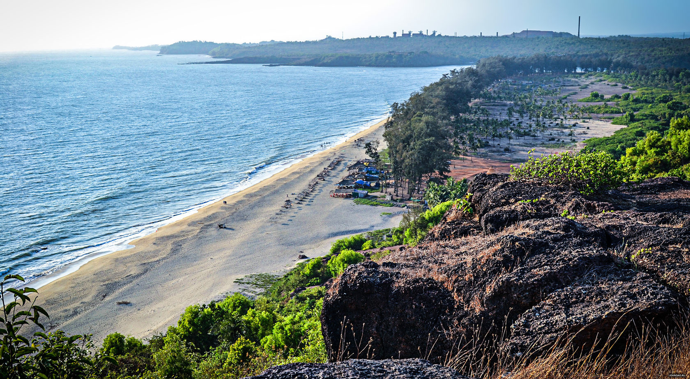
Множество небольших гостиниц и пансионов предлагают недорогое размещение. Кафе, ресторанчики, бары, магазины, ночные клубы – улочки курортных деревушек многолюдны в любое время суток. Местное население дополняют «хиппи», артисты, художники, оставшиеся здесь навсегда, подчеркивая атмосферу праздности и веселья.
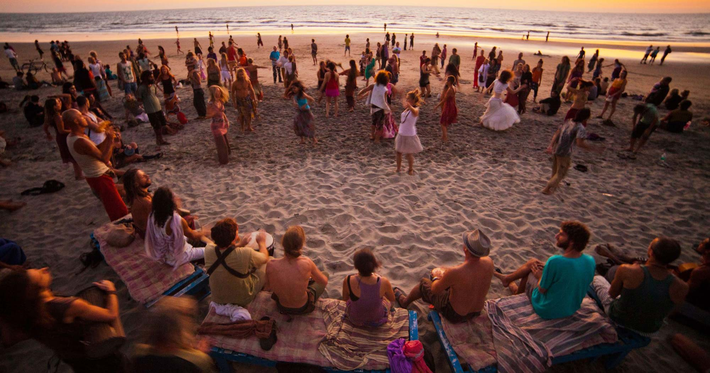
Северный Гоа – настоящий рай для любителей вечеринок, open air party и ночных клубов. Отличительной чертой местных вечеринок является особая разновидность жанра техно-музыки, так называемый «гоанский транс», замысловатая смесь европейской транс-музыки с самобытными национальными мотивами Индии. Но это не является единственным направлением, которое задает ритм жизни северной части штата, здесь также звучит house и R&B. В числе самых популярных клубов – Hilltop, 9Bar, Curlie's, Shiva Valley, West End Club.
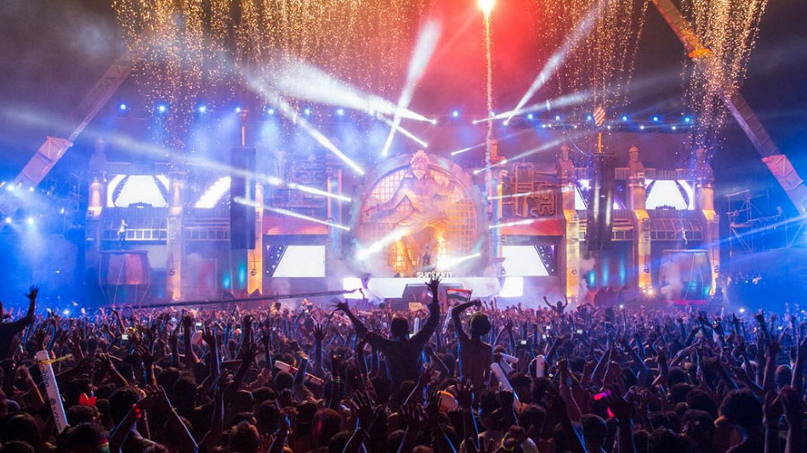
Ресторанное меню славится обилием блюд из морепродуктов по довольно недорогой цене. Нельзя обойти вниманием знаменитые на весь мир ночной и дневной «блошиные рынки» в поселениях Арпора и Анджуна, куда привозят товары и разных уголков Индии. Посетив эти рынки, невозможно остаться без сувенира, который напоминал бы об этом невероятном месте.
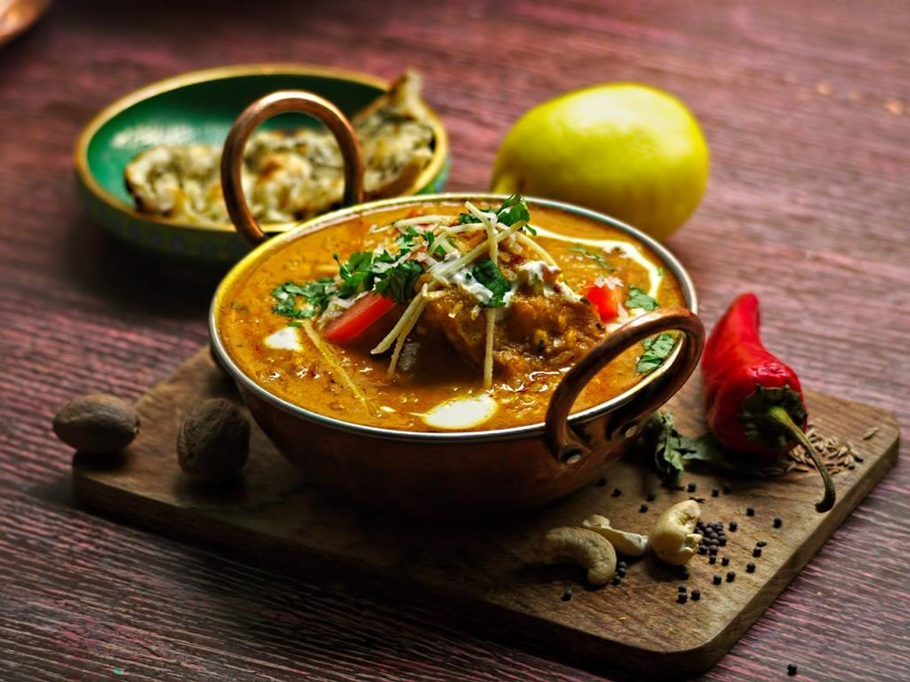
С географической точки зрения, Гоа делится еще и на третью – центральную часть, но в туристической практике ее принято относить к курортам Северного Гоа. Топографически это место можно определить как самое сердце штата, где в море впадают две реки. В Центральный Гоа входят три района: современная столица штата Панаджи, древняя столица Старый Гоа и достаточно крупный город Васко-да-Гама. В свое время эти территории были процветающими португальскими владениями, поэтому помимо культурного наследия, оставленного индуисткой цивилизации, здесь сосредоточено множество христианских храмов. Отдельного внимания заслуживает Базилика, где покоятся нетленные останки Святого Франциска Хавьера.
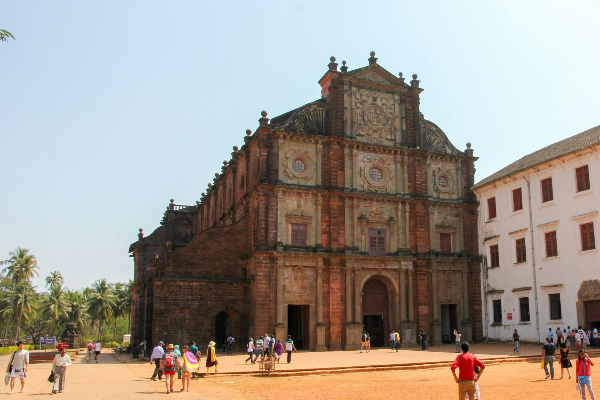
Пляжи Центрального Гоа в основном белые и песчаные, некоторые усеяны мелким ракушечником. Центр Гоа удобен с точки зрения расположения, которое позволяет сочетать праздность и веселый дух северной части с размеренностью и спокойствием южной.
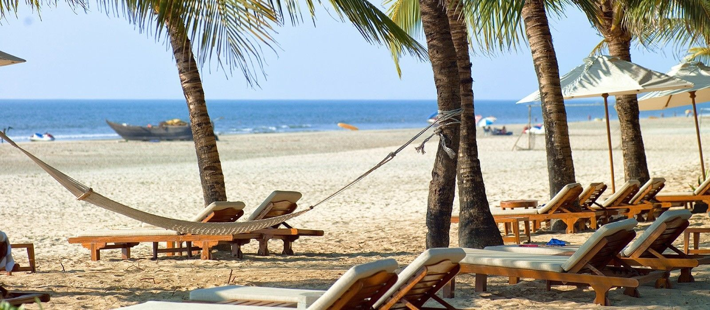
КЕРАЛА
Керала – штат на юго-восточной оконечности полуострова, один из самых чистых и благоустроенных курортов в Индии. Уникальный природный ландшафт с чайными плантациями и национальными парками, роскошные пляжи и традиции древнейшей медицинской системы аюрведы привлекают сюда туристов, стремящихся совместить европейский комфорт с восточной экзотикой. Отдых в Керале особенно оценят люди, заботящиеся о своем здоровье, приверженцы правильного питания, и конечно же, йоги.
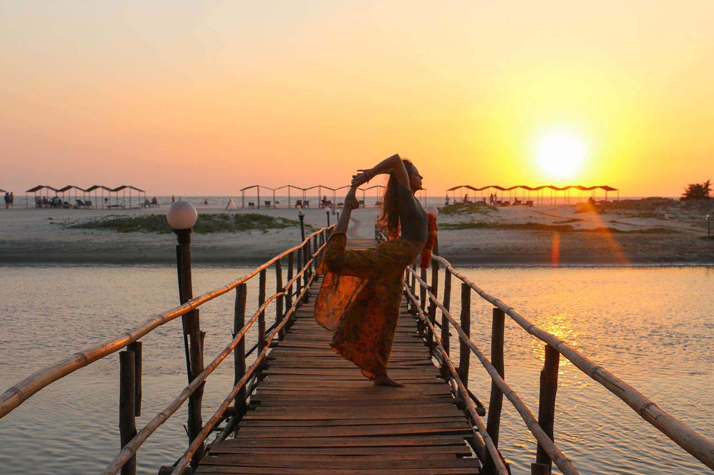
Керальское побережье отличается чистейшими пляжами из белого песка, спокойным морем и пологим спуском в воду, что особенно важно для туристов с детьми. Интересен курорт и с точки зрения лечебного туризма – именно здесь, согласно легенде, зародилась и достигла своего расцвета аюрведа – традиционная система индийской медицины. На курорте представлено разнообразие оздоравливающих, омолаживающих и снимающих стресс программ.
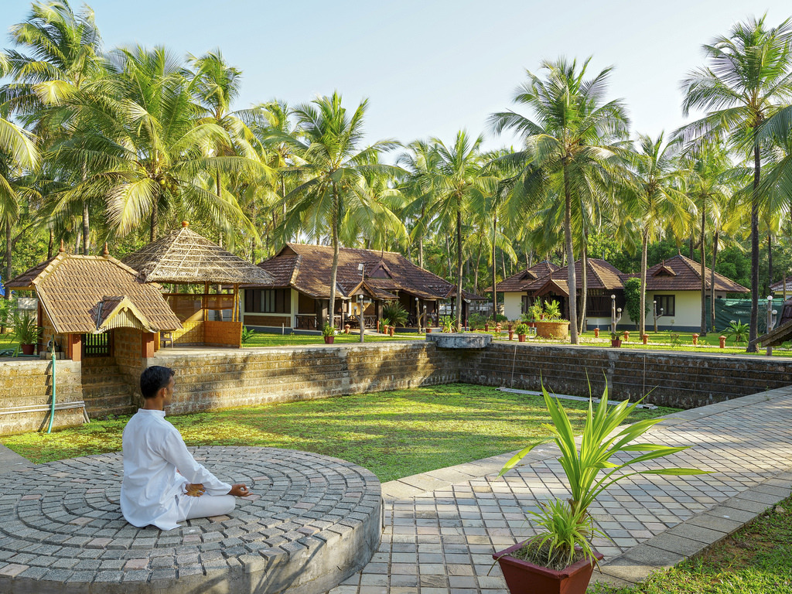
Керала получила прозвище «Индийская Венеция» за сложную сеть каналов, проходящих по всей территории штата от побережья до горных хребтов. Раньше каналы использовались местными жителями вместо дорог, а сейчас по ним можно совершить увлекательную речную экскурсию.
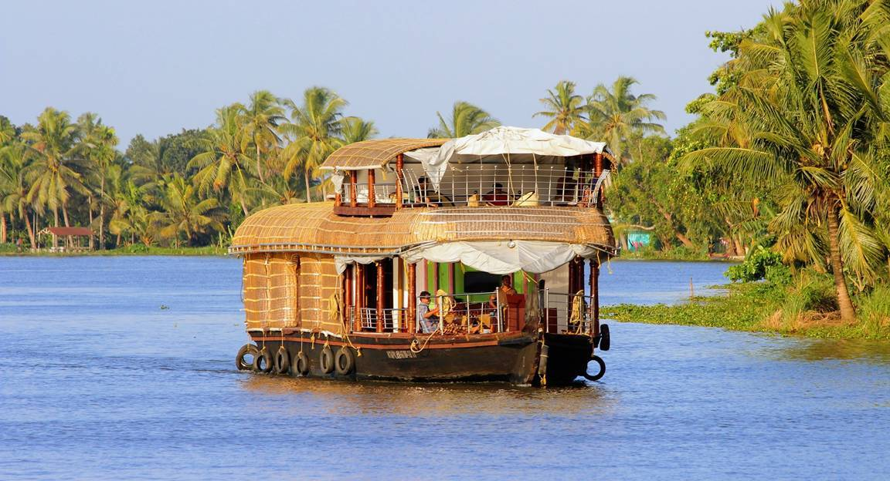
Климат — тропический, мягкий и очень ровный. Выделяют два муссонных периода: в июне-июле и в октябре. Дожди возможны в течение всего года. Самый жаркий период — март-апрель, температура воздуха днем составляет +28..36 °C, ночью — +24..30°C. В остальное время средняя температура воздуха днем +20..28°C, ночью — +18..25°C. Лучший сезон для путешествия — с декабря по апрель.
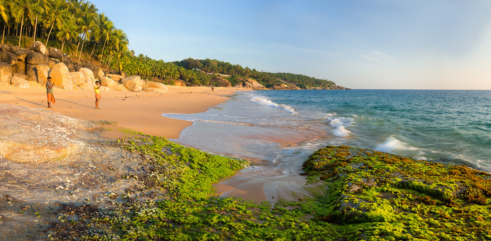
Пляжи Кералы
Все пляжи в Керале общественные и бесплатные, с мелким белым песком, спокойным морем и пологим входом в воду. Вблизи многих пляжей располагаются живописные лагуны с пляжами, куда возят туристов на лодках.
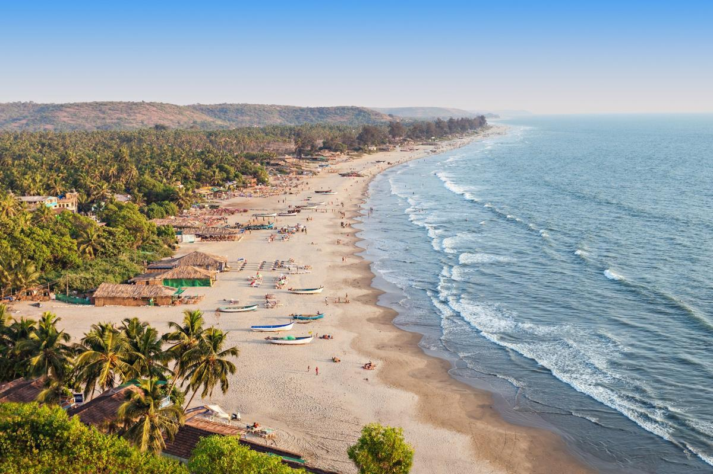
Отели Кералы обычно расположены в многочисленных бухтах на побережье среди густых зеленых зарослей. Комфортабельные отели 4* и 5* предлагают своим гостям качественный и разнообразный отдых, сочетающий в себе пляж, аюрведические процедуры, развлекательные шоу и разнообразные экскурсии.
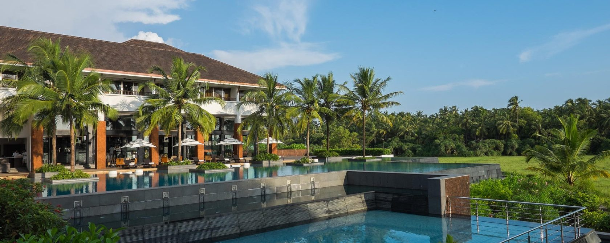
По всем вопросам свяжитесь с нами любым удобным способом:
E-mail: trohin.zh@yandex.ru
Телефон: +7 (977) 730 95 22
Соцсети: Вконтакте | Instagram | Telegram
Индивидуальный предприниматель Трохин Евгений Альбертович
ИНН 503613656680 / ОГРН ИП 315507400016056
город Москва, Щербинка ул. Юбилейная д.3а
Заполните анкету
Мы подберем идеальный тур, исходя из ваших желаний и эмоционального настроя.